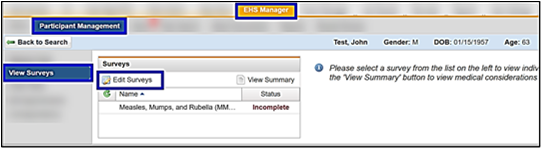
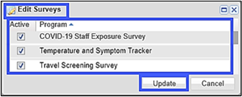

Setting Up the Coronavirus (COVID-19) Survey(s) in EHS Manager
This section describes how the EHS Managerinitializes surveys:
COVID-19 Staff Exposure Form.
Temperature and Symptom Tracker.
Travel Screening Survey.
To set up the the Coronavirus (COVID-19) Survey(s):
Locate participant’s Medical Chart.
Click View Surveys.
Click Edit Surveys.

Select the checkbox(es) next to theappropriate survey, then click Update to activate this survey for the participant.

Notify the participant (according to your facility’s policy) to log in to My Health and select the Health Surveys option.
The participant completes the required survey(s) in the survey list.
If the Temperature and Symptom Survey is used, ReadySet scans the survey for participant-entered temperature over 100.0 F (38 °C) or any symptoms present. If found, it triggers an immediate email notification to the key personnel at your facility.